ระบบนี้ให้นักศึกษา TA ล็อกอินด้วยรหัส OTP ทางอีเมล @cmu.ac.th เพื่อดูชั่วโมงของตนเอง แล้วกด ยืนยัน หรือ รายงาน ว่าไม่ถูกต้อง ส่วนเจ้าหน้าที่ดูสถานะของนักศึกษาทุกคนและได้รับอีเมลแจ้งเตือนเมื่อมีรายงาน ใช้ได้ทั้งมือถือและคอมพิวเตอร์ ไม่ต้องสมัครสมาชิกหรือตั้งรหัสผ่าน
ตรงกับระบบ ณ วันที่ 3 พฤศจิกายน 2569 · รหัสเวอร์ชัน b54bf18
เปิดลิงก์ที่เจ้าหน้าที่ส่งให้ จะพบหน้าเข้าสู่ระบบ จุดที่กรอกได้มีช่องเดียว คือช่องอีเมล
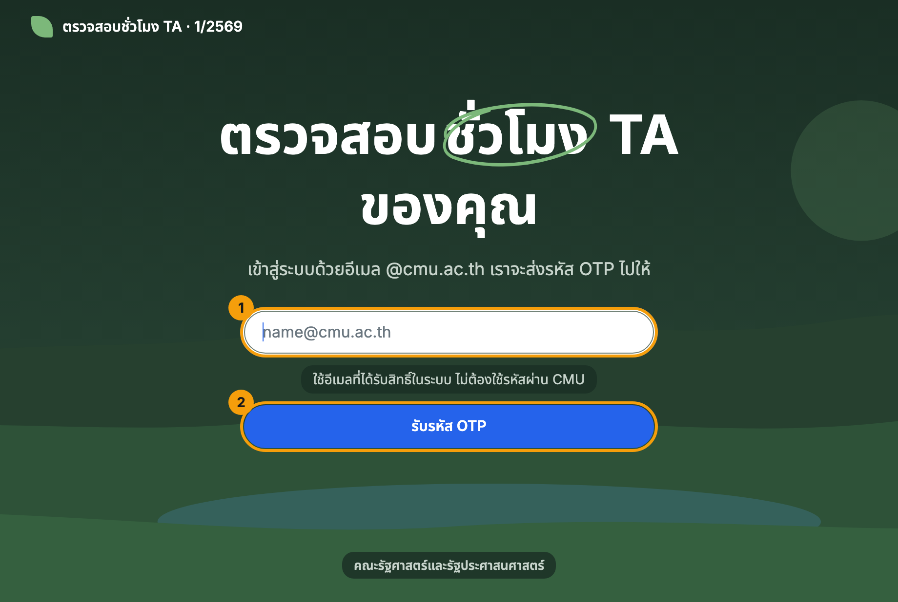
| เลข | อะไร | ทำอะไรได้ |
|---|---|---|
| 1 | ช่องอีเมล กรอกได้ | ใส่อีเมลมหาวิทยาลัยของคุณ (…@cmu.ac.th) ต้องเป็นอีเมลที่ลงทะเบียนไว้กับเจ้าหน้าที่ |
| 2 | ปุ่ม “รับรหัส OTP” กดได้ | ระบบส่งรหัส 6 หลักไปที่อีเมลนั้น |
ใช้อีเมลของตนเองเท่านั้น หากอีเมลไม่อยู่ในรายชื่อ ระบบจะไม่ส่งรหัสให้ (และไม่บอกว่าอีเมลนั้นมีหรือไม่มีในระบบ) ให้ติดต่อเจ้าหน้าที่
ตรวจกล่องจดหมายของคุณ ภายในประมาณ 1–2 นาทีจะได้อีเมลหน้าตาแบบนี้
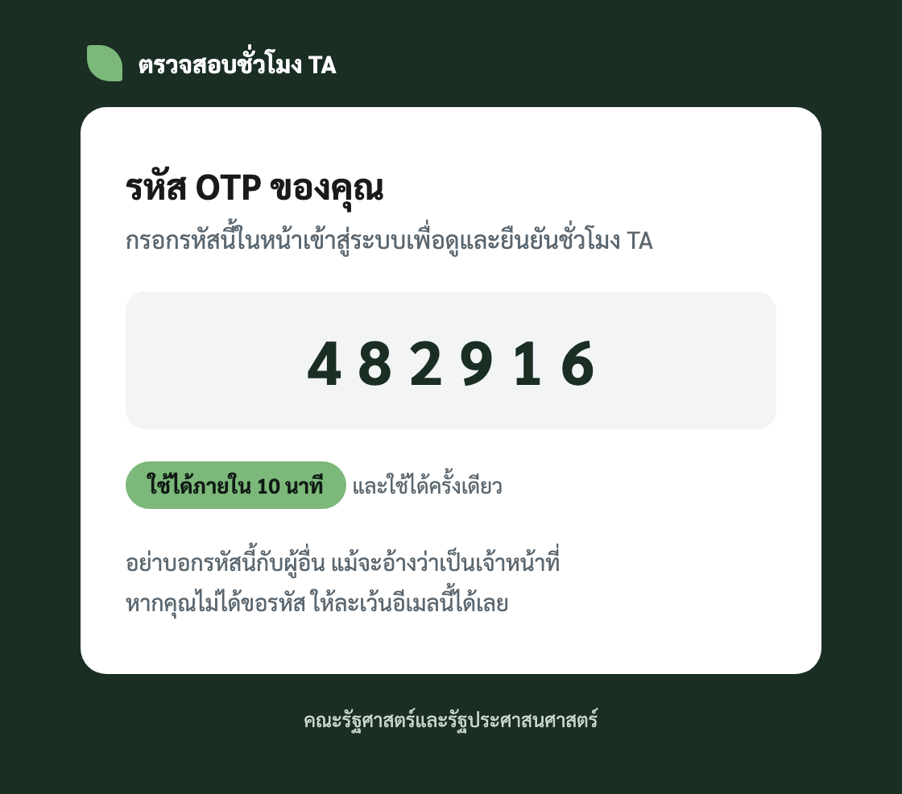
กลับมาที่หน้าเว็บ หน้าจอเปลี่ยนเป็นหน้ากรอกรหัสโดยอัตโนมัติ
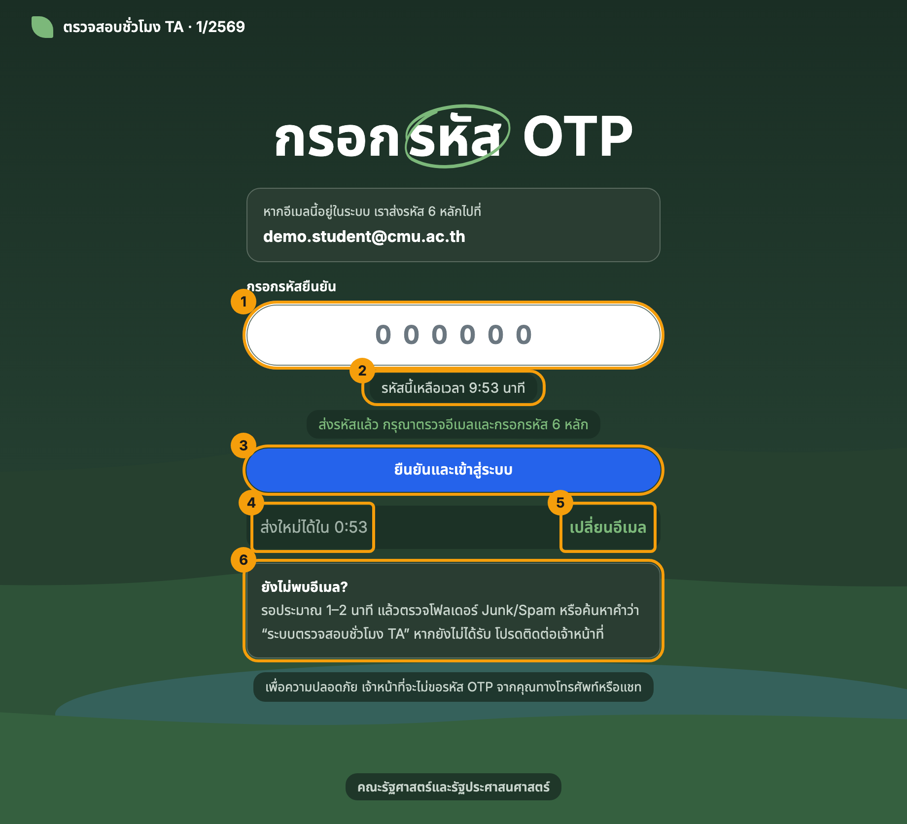
| เลข | อะไร | ทำอะไรได้ |
|---|---|---|
| 1 | ช่องรหัส 6 หลัก กรอกได้ | พิมพ์ตัวเลขจากอีเมล พิมพ์ได้เฉพาะตัวเลข ไม่ต้องเว้นวรรค |
| 2 | เวลานับถอยหลัง ดูอย่างเดียว | บอกเวลาที่รหัสยังใช้ได้ เมื่อหมดเวลา ปุ่มยืนยันจะกดไม่ได้ |
| 3 | ปุ่ม “ยืนยันและเข้าสู่ระบบ” กดได้ | ตรวจรหัสและเข้าสู่ระบบ |
| 4 | ปุ่ม “ส่งรหัสใหม่” กดได้ | กดได้เมื่อนับถอยหลังครบ 1 นาที ใช้เมื่อรหัสหมดอายุหรือไม่ได้รับอีเมล |
| 5 | ปุ่ม “เปลี่ยนอีเมล” กดได้ | กลับไปกรอกอีเมลใหม่ ถ้าพิมพ์อีเมลผิด |
| 6 | กล่อง “ยังไม่พบอีเมล?” ดูอย่างเดียว | บอกวิธีหาอีเมลที่ไม่เข้ากล่องจดหมาย |
เมื่อเข้าสู่ระบบสำเร็จ จะเห็นหน้าสรุปชั่วโมงของคุณ
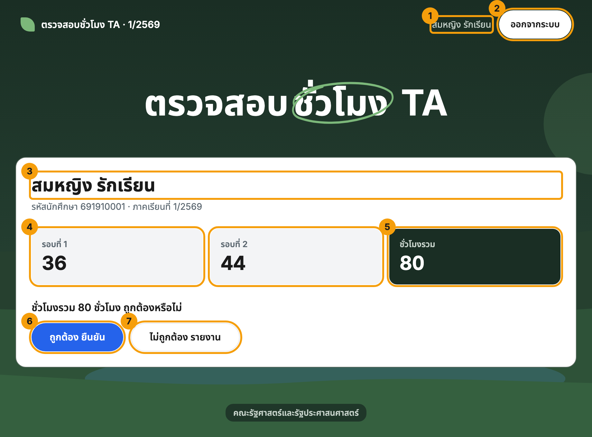
| เลข | อะไร | ทำอะไรได้ |
|---|---|---|
| 1 | ชื่อของคุณ (มุมขวาบน) ดูอย่างเดียว | ใช้เช็กว่าเข้าสู่ระบบถูกบัญชี |
| 2 | ปุ่ม “ออกจากระบบ” กดได้ | แนะนำให้กดทุกครั้งเมื่อใช้เครื่องสาธารณะ |
| 3 | ชื่อ-สกุล รหัสนักศึกษา ภาคเรียน ดูอย่างเดียว | ตรวจว่าเป็นข้อมูลของคุณ |
| 4 | ชั่วโมงแต่ละรอบ ดูอย่างเดียว | รอบที่ 1, รอบที่ 2 … ตามที่เจ้าหน้าที่บันทึก |
| 5 | ชั่วโมงรวม (กล่องสีเข้ม) ดูอย่างเดียว | ตัวเลขที่คุณต้องตรวจ คือผลรวมของทุกรอบ |
| 6 | ปุ่ม “ถูกต้อง ยืนยัน” กดได้ | กดเมื่อชั่วโมงรวมถูกต้อง |
| 7 | ปุ่ม “ไม่ถูกต้อง รายงาน” กดได้ | กดเมื่อชั่วโมงไม่ถูกต้อง จะมีช่องให้บอกเจ้าหน้าที่ |
ระบบบันทึกการยืนยันพร้อมวันและเวลาทันที
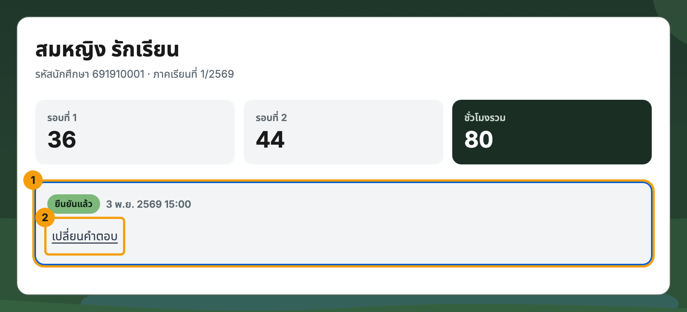
| เลข | อะไร | ทำอะไรได้ |
|---|---|---|
| 1 | สถานะ ดูอย่างเดียว | ป้ายสีเขียว “ยืนยันแล้ว” พร้อมวันและเวลาที่ยืนยัน |
| 2 | “เปลี่ยนคำตอบ” กดได้ | กลับไปเลือกใหม่ ถ้ากดผิด |
จะมีช่องให้บอกเจ้าหน้าที่ว่าผิดตรงไหน
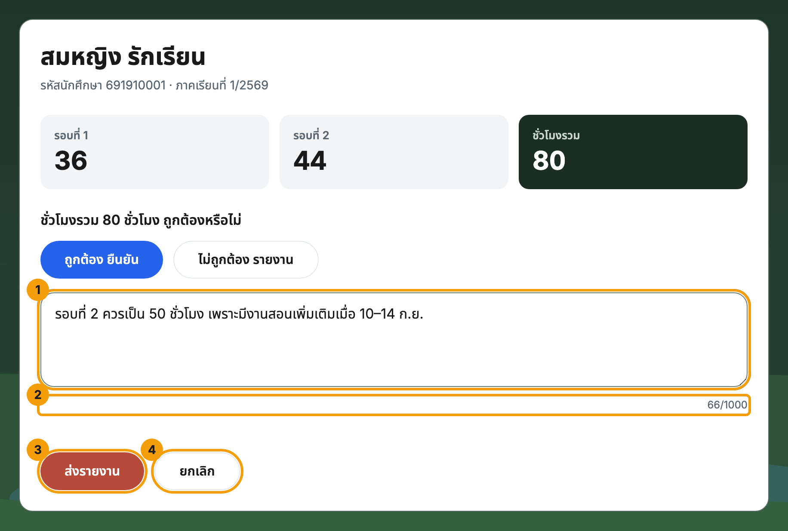
| เลข | อะไร | ทำอะไรได้ |
|---|---|---|
| 1 | ช่องรายละเอียด กรอกได้ | พิมพ์ว่าไม่ถูกต้องตรงไหน ยาวได้ไม่เกิน 1,000 ตัวอักษร และต้องมีอย่างน้อย 10 ตัวอักษร |
| 2 | ตัวนับตัวอักษร ดูอย่างเดียว | บอกว่าพิมพ์ไปแล้วกี่ตัว |
| 3 | ปุ่ม “ส่งรายงาน” กดได้ | ส่งถึงเจ้าหน้าที่ทันที |
| 4 | ปุ่ม “ยกเลิก” กดได้ | ปิดช่องนี้โดยไม่ส่งอะไร |
เมื่อกด “ส่งรายงาน” ระบบส่งถึงเจ้าหน้าที่ทันที และเจ้าหน้าที่ได้รับอีเมลแจ้งเตือนด้วย
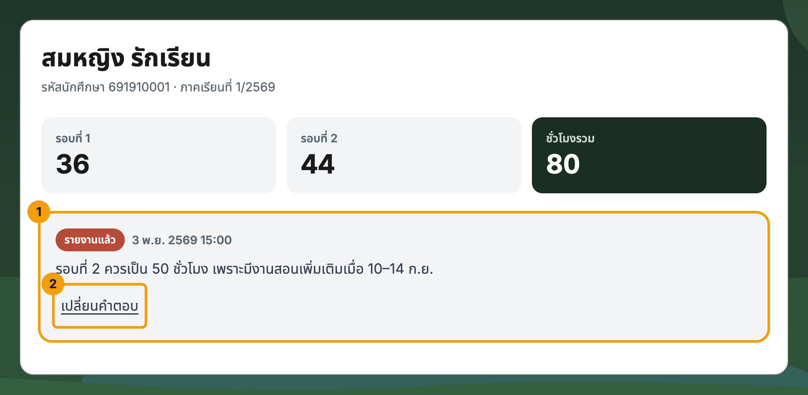
| เลข | อะไร | ทำอะไรได้ |
|---|---|---|
| 1 | สถานะ ดูอย่างเดียว | ป้ายสีแดง “รายงานแล้ว” พร้อมข้อความที่คุณส่ง |
| 2 | “เปลี่ยนคำตอบ” กดได้ | ส่งรายงานใหม่ หรือเปลี่ยนเป็นยืนยัน |
ตอบผิดหรือเปลี่ยนใจ กด “เปลี่ยนคำตอบ” ได้เสมอ ระบบเก็บทุกคำตอบไว้เป็นประวัติ และถือคำตอบล่าสุดเป็นสถานะปัจจุบัน
ถ้าเจ้าหน้าที่แก้ชั่วโมงในระบบหลังจากที่คุณยืนยันหรือรายงานไปแล้ว ระบบจะแจ้งและให้คุณตอบใหม่ ส่วนคำถามและปุ่มจะแสดงอยู่เลย
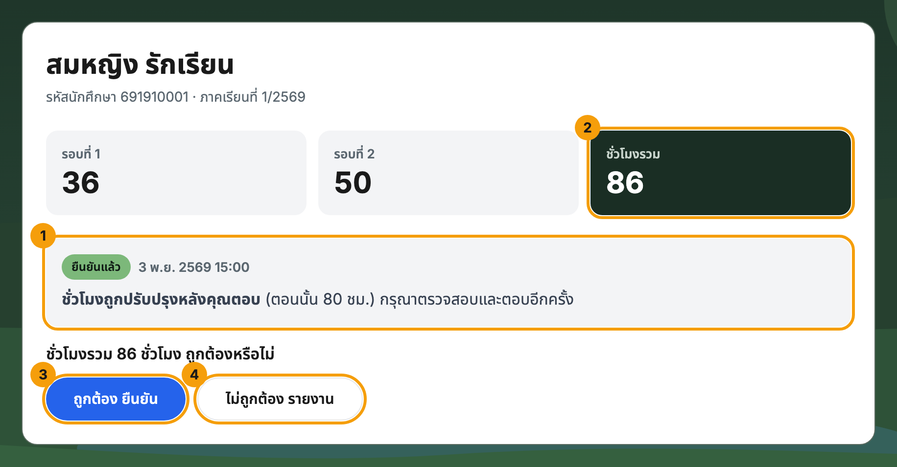
| เลข | อะไร | ทำอะไรได้ |
|---|---|---|
| 1 | ข้อความ “ชั่วโมงถูกปรับปรุงหลังคุณตอบ” ดูอย่างเดียว | บอกชั่วโมงเดิมที่คุณเคยเห็น (ที่นี่คือ 80 ชั่วโมง) |
| 2 | ชั่วโมงรวมใหม่ ดูอย่างเดียว | ตัวเลขล่าสุดในระบบ (ที่นี่คือ 86 ชั่วโมง) |
| 3 | ปุ่ม “ถูกต้อง ยืนยัน” กดได้ | ยืนยันตัวเลขใหม่ |
| 4 | ปุ่ม “ไม่ถูกต้อง รายงาน” กดได้ | รายงานอีกครั้งถ้ายังไม่ถูกต้อง |
หน้าจอเรียงเป็นแนวตั้ง ปุ่มกว้างเต็มแถว กดง่ายด้วยนิ้ว ทุกปุ่มสูงอย่างน้อย 44 พิกเซล
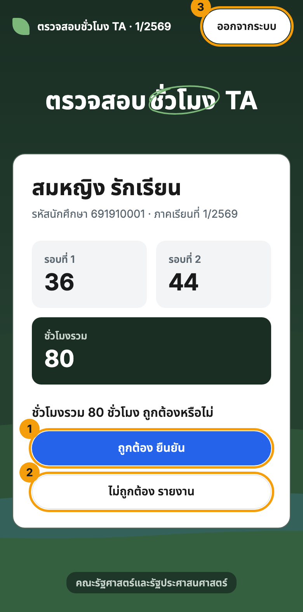
| ข้อความ / อาการ | ทำอย่างไร |
|---|---|
| ไม่ได้รับอีเมล OTP | รอ 1–2 นาที ตรวจ Junk/Spam จากนั้นกด “ส่งรหัสใหม่” (กดได้หลังรอ 1 นาที) ถ้ายังไม่ได้ ตรวจว่าพิมพ์อีเมลถูกและเป็นอีเมลที่ลงทะเบียนไว้ แล้วติดต่อเจ้าหน้าที่ |
| รหัสไม่ถูกต้อง | ตรวจตัวเลขอีกครั้ง และใช้รหัสจากอีเมลฉบับล่าสุดเท่านั้น |
| รหัสหมดอายุ / กรอกผิดเกินกำหนด | กด “ส่งรหัสใหม่” แล้วใช้รหัสใหม่ |
| ขอรหัสบ่อยเกินไป | รอสักครู่ (ประมาณ 1 นาที) แล้วลองใหม่ |
| ส่งอีเมลไม่สำเร็จ | กดขอรหัสใหม่อีกครั้ง ขอใหม่ได้ทันที ถ้ายังไม่ได้ให้ติดต่อเจ้าหน้าที่ |
| ระบบส่งอีเมลเต็มโควตาของวันนี้ | ลองใหม่พรุ่งนี้ หรือติดต่อเจ้าหน้าที่ |
| เซสชันหมดอายุ | เข้าสู่ระบบใหม่ ระบบจำการเข้าสู่ระบบได้ประมาณ 6 ชั่วโมง และเมื่อปิดแท็บจะออกจากระบบ |
| ยังไม่มีข้อมูลชั่วโมงของคุณในภาคเรียนนี้ | ข้อมูลของคุณยังไม่ถูกบันทึกในระบบ ติดต่อเจ้าหน้าที่ |
| ตัวเลขชั่วโมงไม่ตรงกับที่คุณมี | กด “ไม่ถูกต้อง รายงาน” พร้อมอธิบาย (อย่ากดยืนยัน) |
| กดยืนยันหรือรายงานผิด | กด “เปลี่ยนคำตอบ” แล้วเลือกใหม่ |
เจ้าหน้าที่ใช้ลิงก์เดียวกับนักศึกษา และล็อกอินด้วย OTP แบบเดียวกัน (ขั้นที่ 1–3 ข้างต้น) แต่ใช้อีเมลที่ลงไว้ในแท็บ Staff ของชีต
เมื่อเข้าสำเร็จจะเห็นแดชบอร์ดแทนหน้านักศึกษา
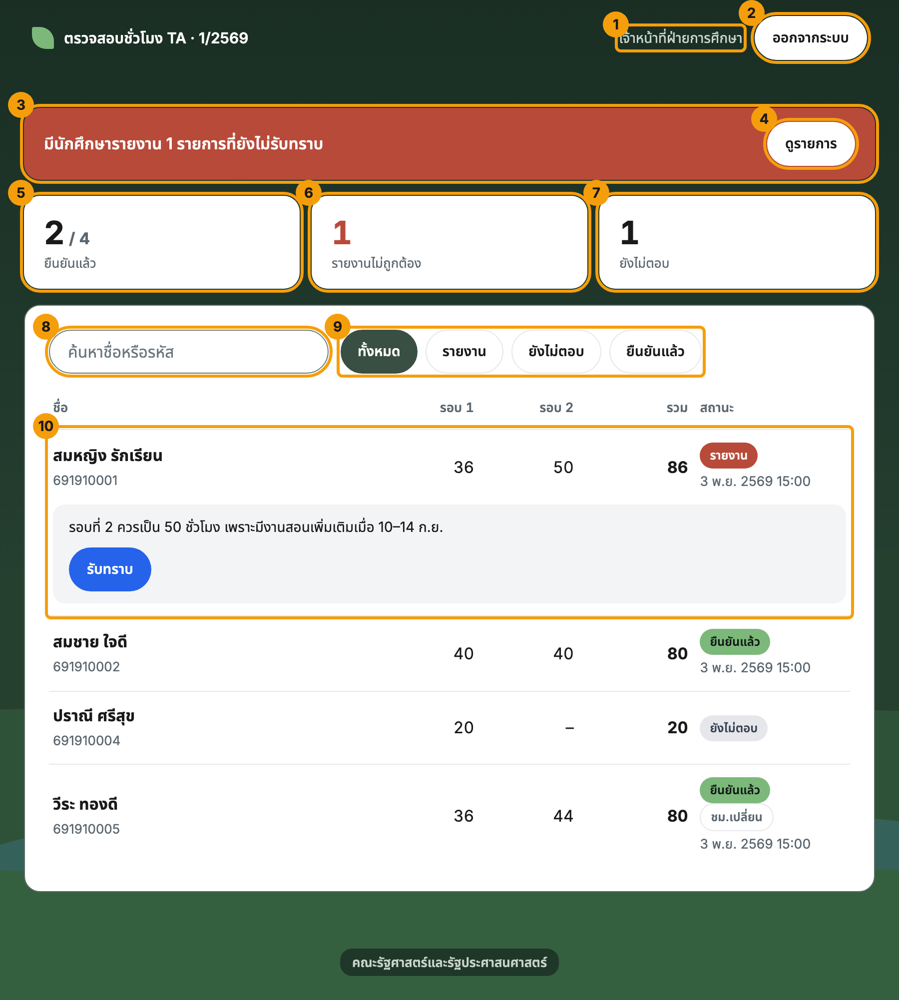
| เลข | อะไร | ทำอะไรได้ |
|---|---|---|
| 1 | ชื่อผู้ใช้ (มุมขวาบน) ดูอย่างเดียว | ใช้เช็กว่าเข้าสู่ระบบถูกบัญชี |
| 2 | ปุ่ม “ออกจากระบบ” กดได้ | แนะนำให้กดเมื่อใช้เครื่องสาธารณะ |
| 3 | แถบสีแดง ดูอย่างเดียว | บอกจำนวนรายงานที่ยังไม่กด “รับทราบ” หายไปเมื่อรับทราบครบ |
| 4 | ปุ่ม “ดูรายการ” กดได้ | กรองให้เห็นเฉพาะคนที่รายงาน |
| 5 | “ยืนยันแล้ว” ดูอย่างเดียว | จำนวนที่ยืนยันแล้ว จากทั้งหมด |
| 6 | “รายงานไม่ถูกต้อง” ดูอย่างเดียว | นับทุกคนที่รายงาน แม้รับทราบแล้ว (ต่างจากเลขในแถบสีแดง ซึ่งนับเฉพาะที่ยังไม่รับทราบ) |
| 7 | “ยังไม่ตอบ” ดูอย่างเดียว | ใช้ตามคนที่ยังไม่ตอบ |
| 8 | ช่องค้นหา กรอกได้ | พิมพ์ชื่อหรือรหัสนักศึกษา ผลแสดงทันที |
| 9 | ปุ่มกรองสถานะ กดได้ | ทั้งหมด / รายงาน / ยังไม่ตอบ / ยืนยันแล้ว ปุ่มที่เลือกอยู่เป็นสีเขียวเข้ม |
| 10 | แถวนักศึกษา ดูอย่างเดียว | ชื่อ รหัส ชั่วโมงแต่ละรอบ ชั่วโมงรวม และสถานะพร้อมวันเวลาที่ตอบ แถว “รายงาน” จะแสดงข้อความของนักศึกษา |
ป้ายสถานะ: ยืนยันแล้ว เขียว · รายงาน แดง · ยังไม่ตอบ เทา · ชม.เปลี่ยน ขอบเทา หมายถึงชั่วโมงถูกแก้หลังนักศึกษาตอบ และต้องรอให้ตอบใหม่
หน้านี้รีเฟรชข้อมูลอัตโนมัติทุก 1 นาทีขณะเปิดแท็บอยู่ และรีเฟรชทันทีเมื่อสลับกลับมาที่แท็บ ชื่อแท็บของเบราว์เซอร์จะแสดงจำนวนรายงานใหม่ เช่น (1) ตรวจสอบชั่วโมง TA
ทำให้เห็นได้แม้เปิดหน้าอื่นอยู่ การพิมพ์ในช่องค้นหาไม่ถูกขัดจังหวะเมื่อรีเฟรช
กด “ดูรายการ” (4 ในภาพก่อนหน้า) หรือปุ่มกรอง “รายงาน” เพื่อดูเฉพาะรายงาน
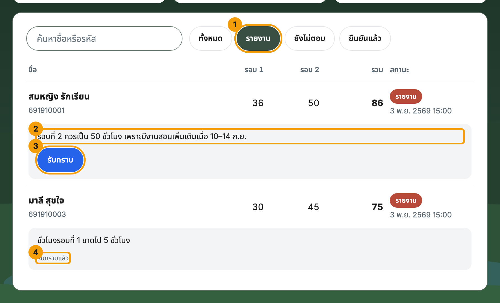
| เลข | อะไร | ทำอะไรได้ |
|---|---|---|
| 1 | ปุ่มกรอง “รายงาน” กดได้ | กดแล้วเห็นเฉพาะคนที่รายงาน |
| 2 | ข้อความจากนักศึกษา ดูอย่างเดียว | อ่านว่าผิดตรงไหน |
| 3 | ปุ่ม “รับทราบ” กดได้ | กดเมื่อคุณเห็นและดำเนินการแล้ว |
| 4 | “รับทราบแล้ว” ดูอย่างเดียว | รายงานที่รับทราบไปแล้วจะแสดงข้อความนี้แทนปุ่ม |
หลังกด “รับทราบ” ปุ่มเปลี่ยนเป็นข้อความ “รับทราบแล้ว” และตัวเลขในแถบสีแดงลดลง (เมื่อรับทราบครบ แถบสีแดงหายไป) ระบบบันทึกอีเมลของผู้กดและเวลาไว้ในแท็บ Ack
พิมพ์ในช่องค้นหา ผลจะแสดงทันที ค้นได้ทั้งชื่อและรหัส ใช้ร่วมกับปุ่มกรองได้
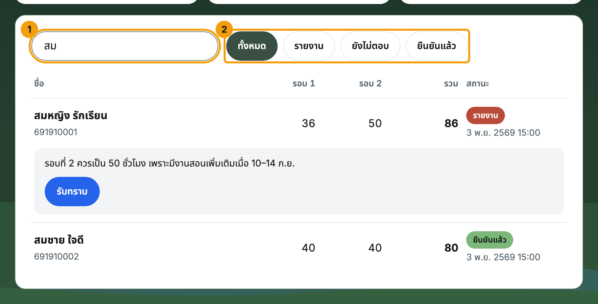
| เลข | อะไร | ทำอะไรได้ |
|---|---|---|
| 1 | ช่องค้นหา กรอกได้ | พิมพ์ “สม” เห็นเฉพาะชื่อที่มีคำนี้ ค้นได้ทั้งชื่อและรหัส |
| 2 | ปุ่มกรอง กดได้ | ใช้ร่วมกับช่องค้นหาได้ เช่น กรอง “ยังไม่ตอบ” แล้วพิมพ์ชื่อ |
แถวรายชื่อเรียงต่อกันเป็นการ์ด ใช้งานได้ครบเหมือนบนคอมพิวเตอร์ ตัวเลขแต่ละช่องมีป้ายนำหน้า เช่น “รอบ 1: 36” “รวม: 86”
ภาพนี้แสดงเฉพาะส่วนบนของหน้า ที่เหลือเลื่อนลงดูได้
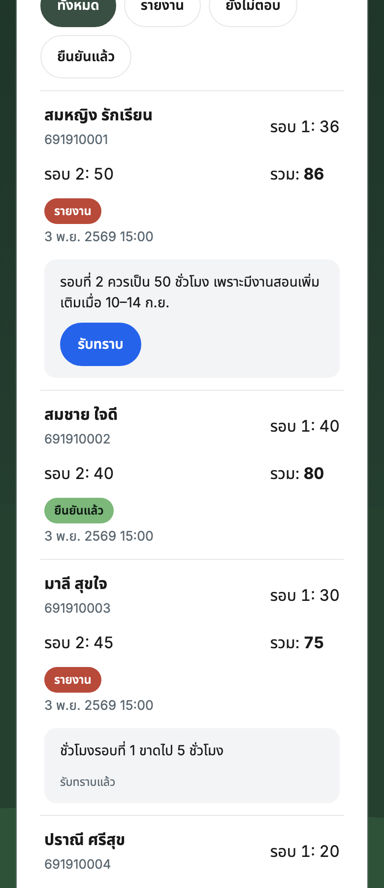
เมื่อนักศึกษากด “ส่งรายงาน” ระบบส่งอีเมลแจ้งผู้รับที่ตั้งไว้ ดังตัวอย่าง
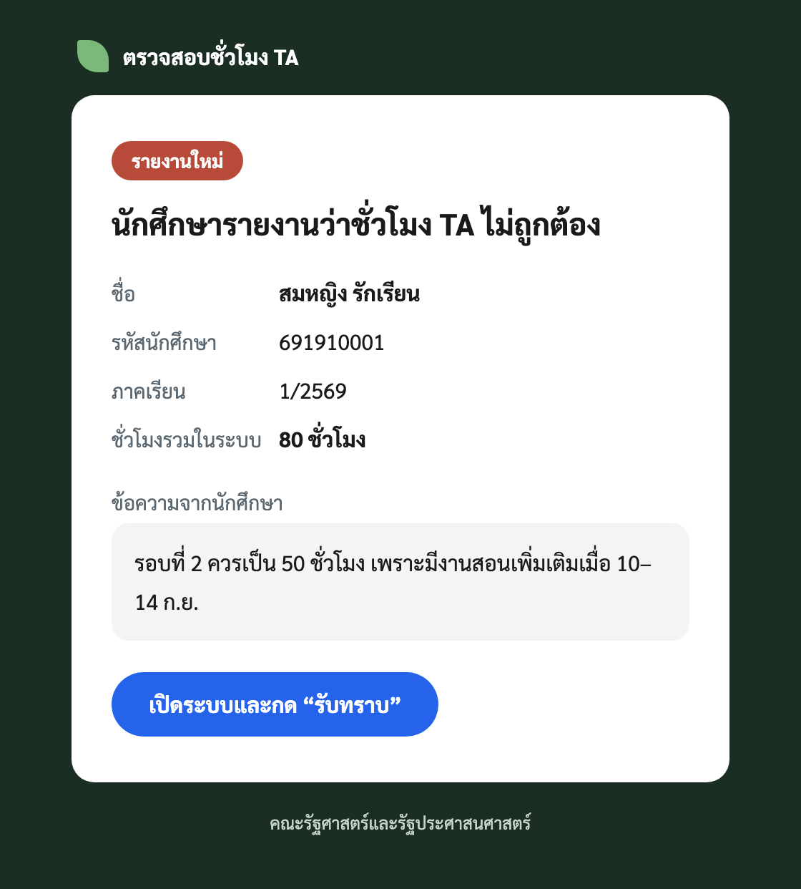
อีเมลบอกชื่อ รหัส ภาคเรียน ชั่วโมงรวมในระบบ และข้อความของนักศึกษา ส่งในนาม polsci.ecwp@gmail.com หัวเรื่องขึ้นต้นด้วย [TA 1/2569] เพื่อค้นหาได้ง่าย
ผู้รับตั้งได้ที่ NOTIFY_TO ในแท็บ Config (ค่าตั้งต้นคือ rungtiwa.p@cmu.ac.th คนเดียว ใส่หลายอีเมลคั่นด้วยจุลภาคได้ หรือเว้นว่างเพื่อส่งถึงทุกคนในแท็บ Staff)
ปิดการแจ้งเตือนทางอีเมลได้โดยตั้ง NOTIFY_EMAIL เป็น FALSE
| ต้องการ | ทำที่ไหน |
|---|---|
| เพิ่ม/ลบเจ้าหน้าที่ | แท็บ Staff เพิ่มหรือลบแถว (อีเมล และชื่อ) มีผลทันที (ผู้รับอีเมลแจ้งเตือนตั้งแยกที่ NOTIFY_TO) |
| เพิ่มนักศึกษา หรือแก้อีเมลที่รับ OTP | แท็บ Student (รหัส ชื่อ อีเมล) นักศึกษาที่ไม่มีอีเมลจะเข้าสู่ระบบไม่ได้ |
| แก้ชั่วโมง | แท็บ Hours หนึ่งแถวต่อคนต่อรอบ นักศึกษาที่ตอบไปแล้วจะเห็นป้าย “ชม.เปลี่ยน” และต้องตอบใหม่ |
| เปลี่ยนภาคเรียน | แก้ TERM ในแท็บ Config วางข้อมูลใหม่ในแท็บ import_TA แล้วรัน importHours() ข้อมูลภาคเก่าไม่ถูกแตะ |
| ดูประวัติคำตอบ | แท็บ Response (เพิ่มต่อท้ายอย่างเดียว แถวล่าสุดของแต่ละคนคือสถานะปัจจุบัน) และ Ack (ใครรับทราบเมื่อใด) |
| ปรับอายุรหัสและจำนวนครั้งที่กรอกผิดได้ | OTP_TTL_MIN (10) · OTP_MAX_TRIES (5) · OTP_RESEND_SEC (60) ในแท็บ Config |
| เปลี่ยนผู้รับอีเมลแจ้งเตือนรายงาน | NOTIFY_TO ในแท็บ Config ใส่อีเมลเดียวหรือหลายอีเมลคั่นด้วยจุลภาค เว้นว่าง = ทุกคนในแท็บ Staff |
| เปลี่ยนชื่อผู้ส่งหรือที่อยู่ที่ใช้ส่ง | MAIL_SENDER_NAME · MAIL_FROM · MAIL_REPLY_TO (เว้นว่าง MAIL_FROM = ส่งจากบัญชีเจ้าของสคริปต์) |
ถ้าค่าภาคเรียนในชีตถูกแปลงเป็นวันที่ (Google Sheets ทำเช่นนี้กับ “1/2569”) ระบบอ่านกลับเป็น “1/2569” ให้เสมอ และ setup() ซ่อมค่าที่ถูกแปลงแล้ว
polsci.ecwp@gmail.com ต้องถูกเพิ่มและยืนยันแล้วเป็น “Send mail as” ใน Gmail ของเจ้าของสคริปต์ (Settings ▸ Accounts) ถ้ายังไม่พร้อม ระบบยังส่งได้ แต่จากบัญชีเจ้าของสคริปต์authorizeMailSend() หนึ่งครั้งในตัวแก้ไข Apps Script อนุญาตสิทธิ์ Gmail แล้วอ่าน log ว่าขึ้น “Alias OK” และตรวจอีเมลทดสอบที่ได้รับTERM ถูกต้อง รายชื่อในแท็บ Staff ครบ และนักศึกษาทุกคนมีอีเมลในแท็บ Student (log ของ importRoster() บอกว่าใครไม่มีอีเมล)studentnow หลังนำเข้าอีเมล เพราะมีข้อมูลส่วนบุคคล